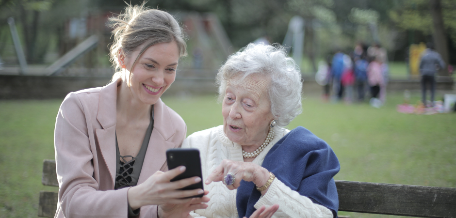

Understanding Cognitive and Psychological Challenges
Learning new technology can be overwhelming, particularly for elderly users. Many may feel unsure of where to start or fear making mistakes that could lead to losing important information or damaging a device. This page aims to alleviate those concerns by offering simple explanations and resources to help you or your loved ones build confidence with technology.
Common Cognitive Challenges
Fear of Mistakes
Example: Mike wants to video call his son but fears he might accidentally delete contacts or break the app.
Solution: Begin with straightforward, step-by-step guides to familiarize yourself with the device or app. Remember, many apps are designed to be user-friendly, and mistakes can often be easily corrected.
Memory and Retention Issues
Example: Forgetting how to log in or access specific features.
Solution: Caregivers or family members can create clear, printable guides or leave sticky notes near the computer or phone with essential instructions.
Tech Terminology Confusion
Example: Terms like “swipe” or “tap” can be confusing.
Solution: We provide a basic tech glossary that simplifies common terms into relatable definitions.
Practical Tips for Overcoming Cognitive Challenges
- Repetition is Key: The more you practice a task, the easier it becomes. Regular practice reinforces memory.
- Use Written and Visual Aids: Caregivers can offer visual aids or simplified written instructions to enhance understanding.
- Ask for Help: Don’t hesitate to ask a family member or caregiver to assist you in walking through the steps until you feel comfortable.
Psychological Barriers: Tech Anxiety and Lack of Confidence
Tech Anxiety
Example: Natasha’s elderly parent feels intimidated by the banking app, fearing scams or losing money.
Solution: Start with small, low-stakes tasks. For instance, before managing banking apps, practice navigating simpler apps like weather or news apps to build confidence.
Fear of Technology
Example: Many elderly users avoid smartphones or computers, believing they are too complicated or dangerous.
Solution: Caregivers can help demystify technology by explaining that these devices are tools designed to make life easier, not harder.
Reluctance to Learn New Things
Example: Some elderly users may feel it’s too late to learn something new or doubt their ability to understand it.
Solution: Encourage progress by celebrating small victories. Learning to send a message or make a simple video call is a significant achievement.
Tools to Help Caregivers Support Cognitive and Psychological Challenges
- Patience and Empathy: Understand that elderly users may need more time to adjust. Providing a stress-free learning environment is essential.
- Positive Reinforcement: Encourage them as they make progress and celebrate small successes.
- Personalized Resources: We offer downloadable guides, checklists, and step-by-step instructions tailored to specific tasks, which caregivers can use to teach elderly users at their own pace.